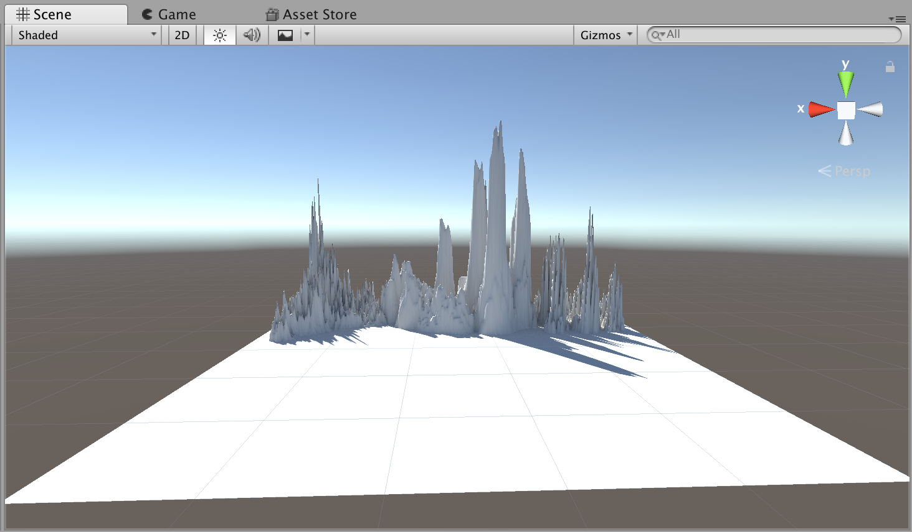
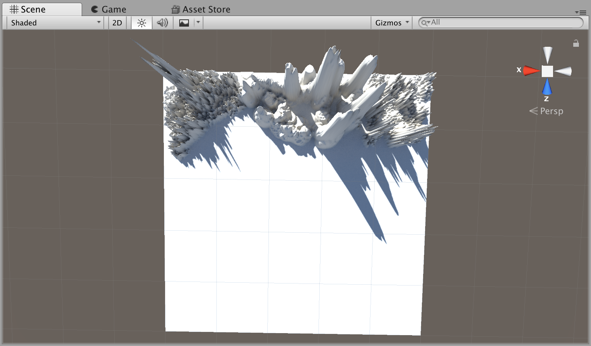
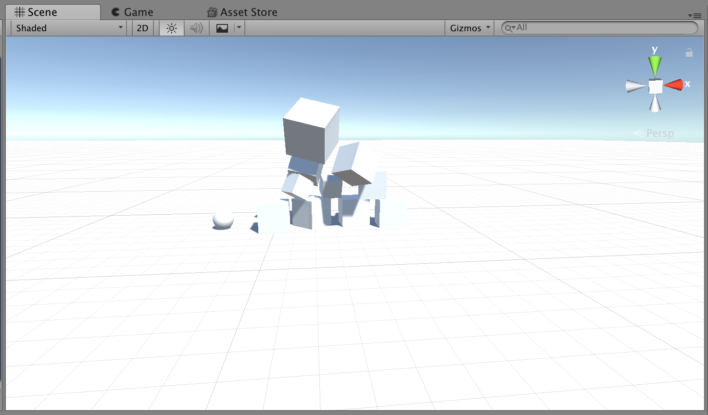
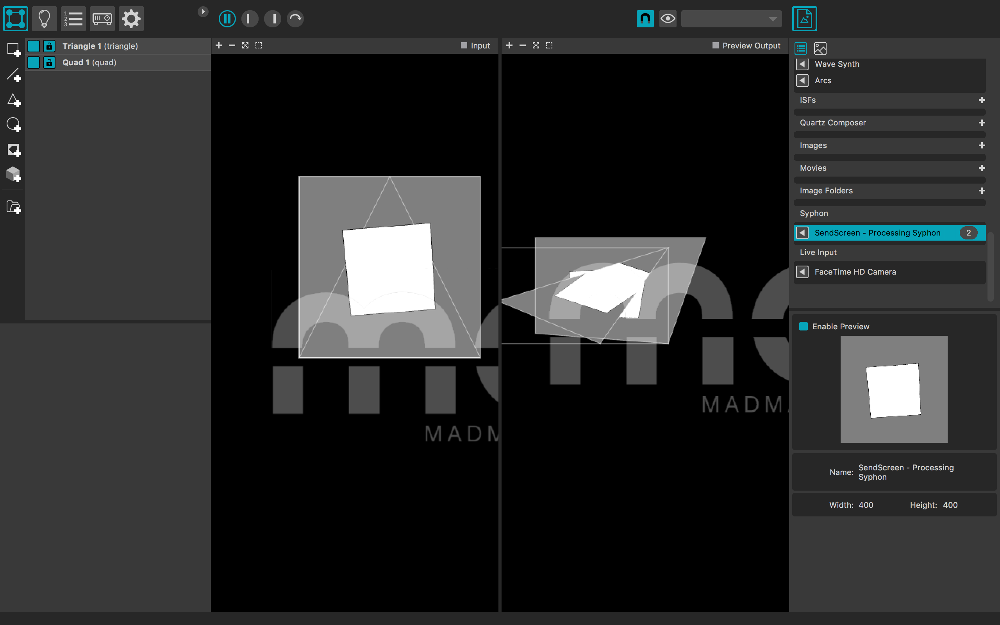
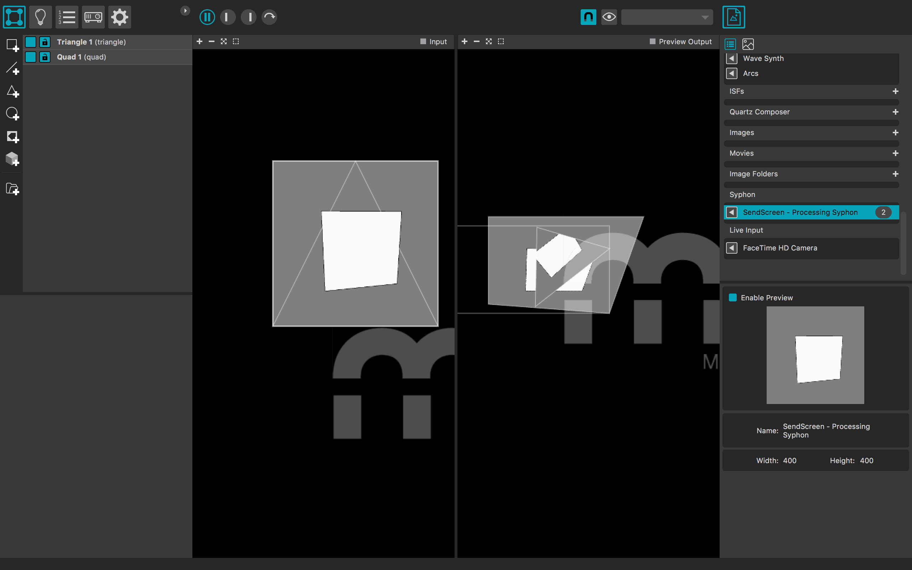
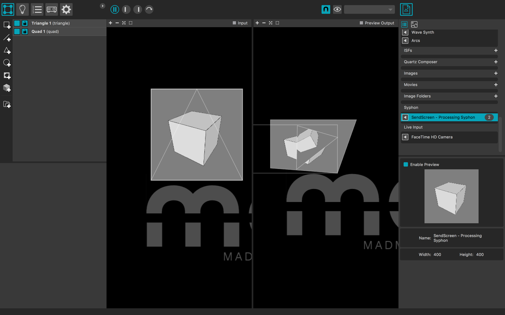

The second workshop was mostly about Unity, where we had to design our own game, with instructions. We had a step by step plan of what needed to be done.
First, we neede to create a terrain and add mountains. We could choose ourselves how we wanted those mountains to look and we could use different kind of brushes for different kind of textures.
 After that, we could try out putting blocks in the game and add gravity, which made them fall down and it was possible to run into them.
At the end we had to put in a car or a tank, which had to be set on fire when you came close to tank. This is displayed in the video. This was done with a trigger function. The fire had to be downloaded as its own and then installed in the tank. Then you could set is as a trigger and give it a radius, when the player came into the radius, the tank was set on fire.
The assignment for MadMapper was really short, it was more a 'get-to-know-MadMapper' exercise. We had to link it to Processing so it could show the different shapes you could make. You could add mulitple screens and experiment with the different shapes. The only problem with MadMapper is, that it cannot be saved. Fortunatly, we can take screenshots and show what we made.
  